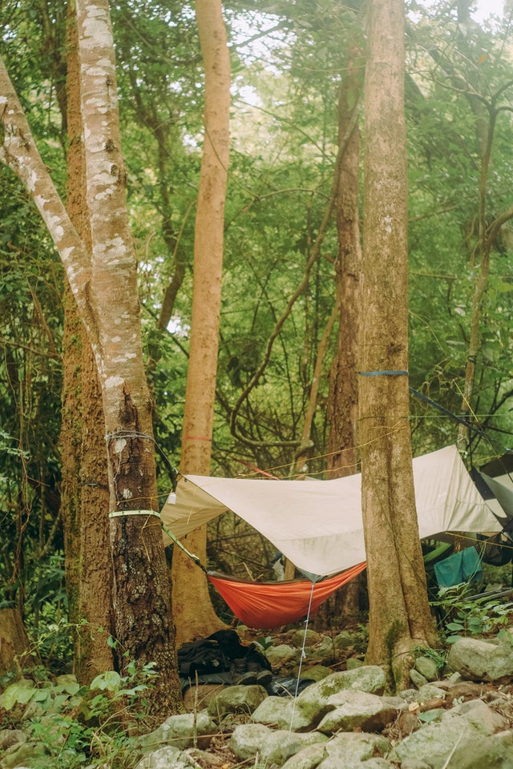
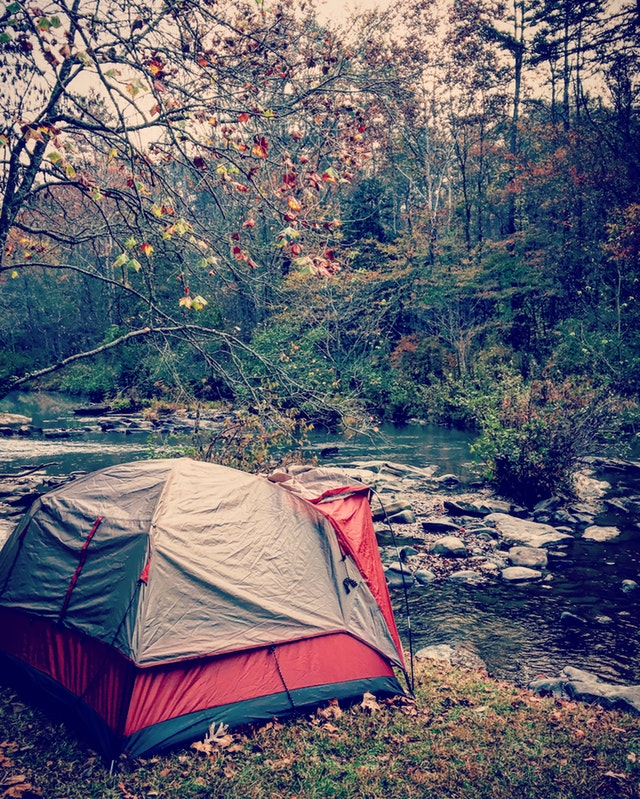
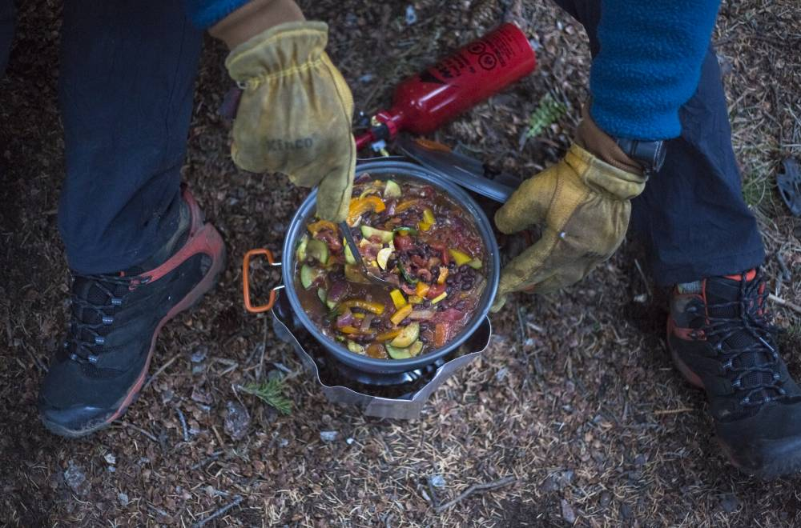

"The woman who was lost in a Hawaiian forest for 17 days posted a Facebook video over the weekend admitting that she acted irresponsibly when she embarked on the hike without her cell phone and water."
Your Journey Begins Here...
Wilderness backpacking is a hobby that I'm passionate about. For me, it is very rewarding to get away from civilization and enjoy nature. However, there is a great deal of preparation needed before heading out into a forest for 3 days. Although not an exclusive list, I will try to give you some pointers.
This page will give you some good starter information but for a complete deep dive into backpacking I would refer you to The Complete Idiot's Guide to Backpacking and Hiking by Jason Stevenson (here on Amazon).
At most points in deciding on gear, a decision between camping luxury and hiking ease must be made. Figure out what your preferences are through lots practice both in your backyard and in some low-risk wilderness like a local campground. Once you are comfortable with your setup, start planning a trip to get your feet wet! As a beginner, it is a good idea to plan trips in foreseeably good weather not too far from civilization.
Basic Gear
Sleep System
Your sleep system is the most critical part of your gear. It typically includes a hiker's:
- tent
- sleeping bag
- sleeping pad
This is a typical hammock camp: 
This is a typical tent camp: 
Backpack
You guessed it, in backpacking your backpack is an important piece of gear. You will need a backpack designed for hiking, your Jansport® won't work here. When choosing a pack, make sure it fits. In short, wilderness backpacking is the activity of carrying a backpack for miles in the wilderness - make sure you have a pack that you like.
Food on the Trail
Choosing the right foods for a backpacking trip has some subjective and objective aspects. Objectively, your food needs to give you enough energy to hike multiple miles per day while also not weighing so much that your pack weight is unbearable for all of those miles. This is another place where a balance between enjoyment and practicality needs to be made. Foods dense with healthy calories like peanut butter, fruit trail mix, and even some chocolate are good choices for the trial. Your diet while backpacking will become increasingly important as you spend more time between fuel-ups. For your first overnight trip, you won't starve because you didn't bring enough food - you'll just be hungry until you get to that nearest McDonald's® after your trip.
Navigation
Trail Research
Wilderness navigation is an advanced but necessary skill. Everyone knows how a compass works, right? Wrong! A compass can do so much more than indicate which direction North is. Even if bringing a GPS or cellphone, it can be live-saving to have a solid understanding of using a compass. Along with this, know the area you are traveling in and bring a map. A good estimate for a pace is 2 mph but it is even better to learn your pace.
Every year underprepared backpackers head into the wilderness with a GPS and no other navigation skills. The results can be dangerous or even deadly.